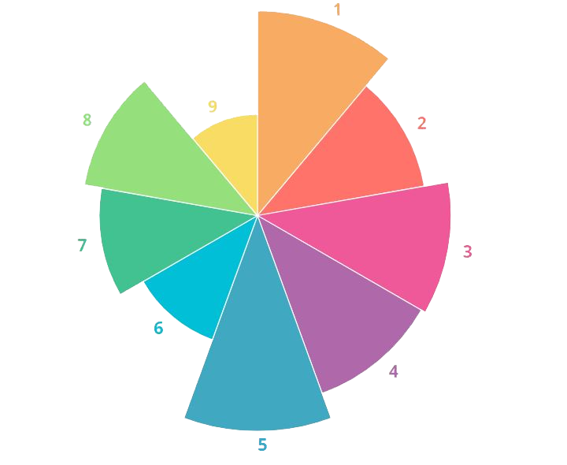
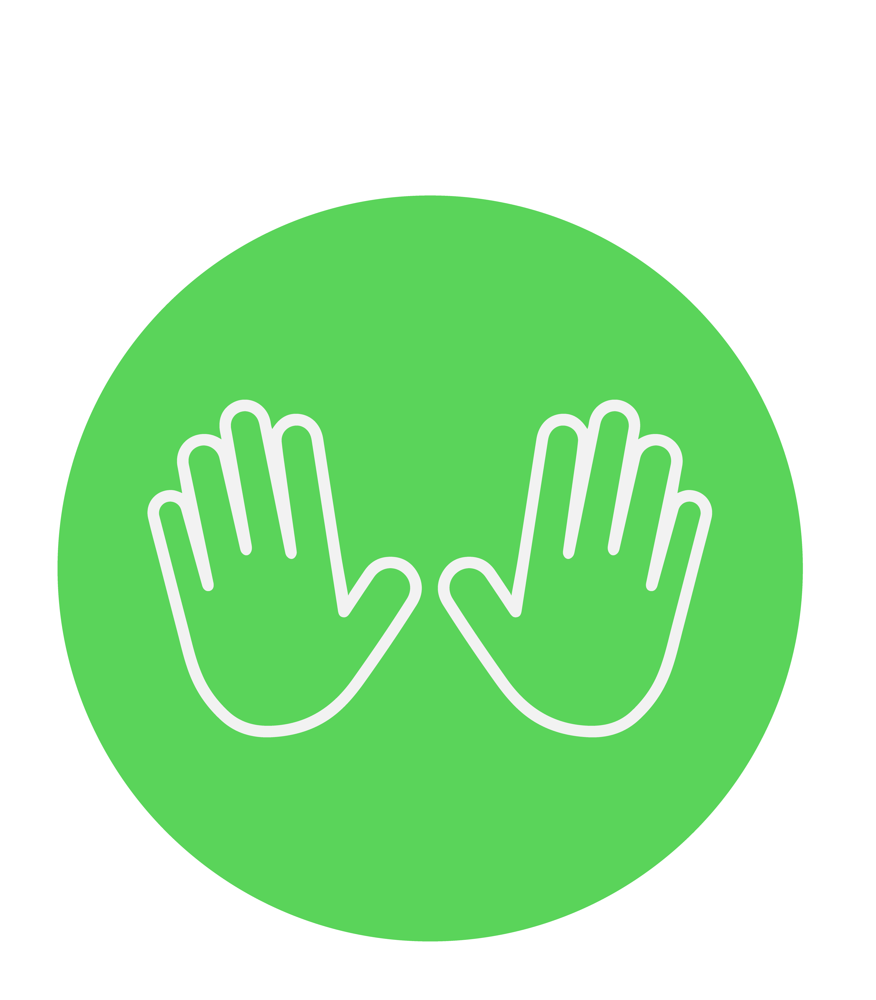
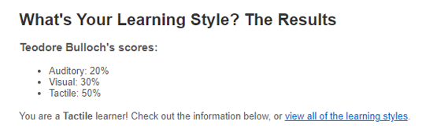

Teodore Bulloch
ePortfolio
Github Repo:github.com/TeodoreBulloch/
Student ID: S3901063
Student Email: S3901063@student.rmit.edu.au
|
Teodore BullochePortfolio |
Github Repo:github.com/TeodoreBulloch/ |
Student ID: S3901063 |
||
Student Email: S3901063@student.rmit.edu.au |
Personal Profile |
|---|
Myers Briggs Type Indicator |
The Ennegram Personality Test |
Learning Style Test |
 |
  |
  |
|
• What the results of these tests mean to me: These results are great tools that allow me to bring in further introspection onto myself, my personality, motivations and habits. Although the learning style test doesn’t really mean much on its own to me, I feel as if it complements the other two tests in terms of my behaviour. The Myer Briggs test was quite fun and gives a good summary of who I am, but I feel as if the Enneagram personality test is more insightful and accurate for each user, as it exposes our subconscious behaviours based on our childhood upbringings. The results of 5w4 means that my primary type is 5 (The Thinker) with my sub-type being 4 (The Creative). A type 5’s basic desire is too be competent and the type 4’s basic desire is to be authentic. These desires stem from lost childhood messages such as a 5 believing that their needs are a problem for others and with 4’s believing that no-one sees them for who they are. Areas for growth for a 5 include finding ways stop being so secretive and stubbornly independent. Whereas a 4 can grow by realising that they don’t have to stand out and looking at the positive aspects of their current life. Finding about how I can grow as a person is the most interesting part of these Enneagram tests as it helps me pinpoint the ways that I can change for the better. Also one fun thing about these tests is that there is a whole community of people who like to type celebrities and fictional characters on this website so you can find similar types to yourself on this website: https://personality-database.com/ • How these results may influence my behaviour in a team: All 3 results didn’t reveal anything to me that was too unexpected, I’ve always felt like a reserved and self-reliant individual. My Myer Briggs type being an INFJ along with my method of learning both reveal that I like to be very independent and reserved, preferring to solve problems on my own. The test that revealed the most insight onto my current behaviours was the cognitive functions test. Being a 5w4 means that I value self-reliance the most, with my greatest fear being helpless or incompetent. Although these results reveal I’m at my best when working solo, I’m going to try and take the extra measure in working with my teammates by not being so stubbornly self-dependent. I also need to realise that sometimes it’s ok to rely on or ask for help from my teammates and teachers for help. • How these reuslts should be taken into account when forming a team: When forming a team, I’ve actually got to take the initiative to gather teammates that I’d like to work with. Although once I’ve settled in I do like co-ordinating the work everyone should be doing, I tend to be very reserved during the formation of a team process as I don’t know anyone yet. I realise that I’ve got to take the initiative to try and reach out to other people to ensure that I can create the best team that I’ve got. |
Footnote |
|---|